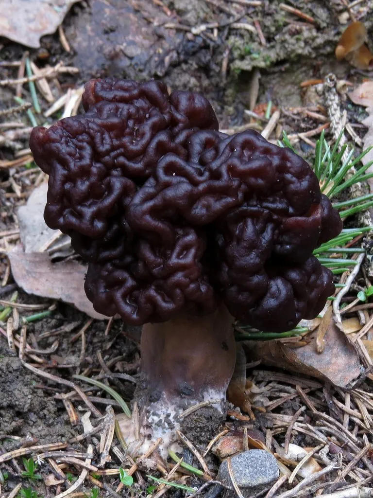

真菌 · 真菌界
鹿花菌 Gyromitra esculenta

鹿花菌的菌盖呈脑状扭曲、红褐色，外形像羊肚菌却含有剧毒的鹿花菌素，误食可致死，是有毒、绝对不可食用的菌类。
- 分类
- 门子囊菌门纲盘菌纲目盘菌目科马鞍菌科属鹿花菌属
- 栖息环境
- 针叶林尤其是松林的沙质土壤、火烧迹地，春季至初夏出菇
- 地理分布
- 欧洲、北美与东亚，中国北方和西南林区有记录
- 保护级别
- 暂无评估（IUCN 未评估，中国未列入重点保护名录）
物种志
鹿花菌是子囊菌门马鞍菌科的大型子囊菌，子实体由菌盖和菌柄组成。菌盖呈不规则的脑状、马鞍状或扭曲的皱褶，直径 5–15 cm，表面红褐色至深褐色，皱褶形成迷宫般的沟纹，与羊肚菌的规整凹坑明显不同；菌肉薄而脆。菌柄白色至淡黄色，粗短，长 3–8 cm，表面有纵向皱纹，内部中空。孢子印淡黄色。
鹿花菌多生于针叶林，尤其是松林中的沙质土壤和火烧迹地，春季至初夏出菇，在欧洲、北美和东亚都有分布，中国北方和西南林区有记录。它含有鹿花菌素，在人体内可水解为甲基肼，属于剧毒物质，误食后会出现呕吐、腹泻、肝损伤和溶血，严重时可致死；加热、晒干只能部分降低毒性，不能保证安全。虽然它的种加词意为“可食”，但鹿花菌有毒、不可食用，采菌时务必与羊肚菌区分。
形态与习性
- 菌盖脑状扭曲，直径 5–15 cm，红褐色
- 菌柄白色至淡黄，粗短，内部中空
- 孢子印淡黄色
- 毒性含鹿花菌素，水解生成甲基肼，剧毒
- 中毒表现呕吐、腹泻、肝损伤与溶血
- 食用性有毒，不可食用，加热不能保证安全
- 生境针叶林沙质土与火烧迹地
趣味知识
- 鹿花菌的菌盖像脑子一样扭曲皱褶，而羊肚菌是规整的凹坑。
- 它含有的鹿花菌素会在体内变成甲基肼，属于剧毒物质。
- 种加词 esculenta 意为“可食”，但它其实有毒、不可食用。
- 误食鹿花菌可造成肝损伤和溶血，严重时会危及生命。